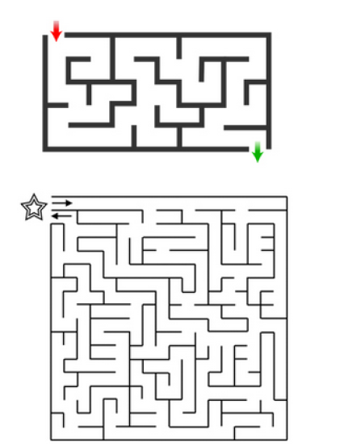
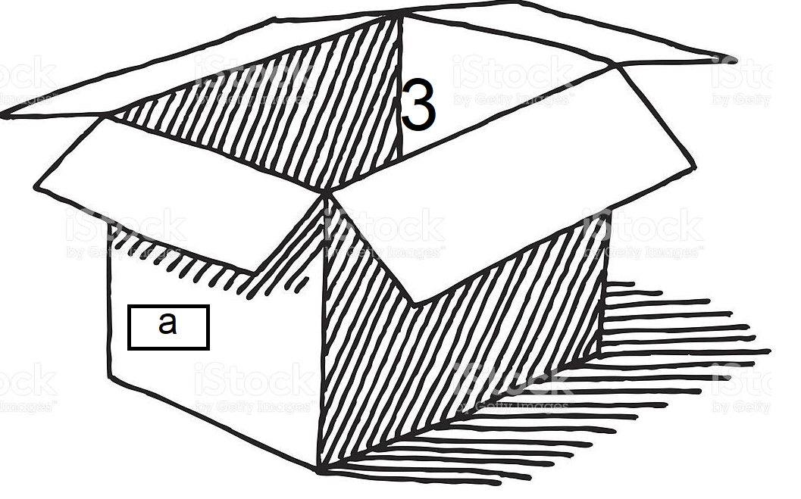
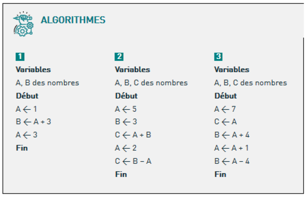
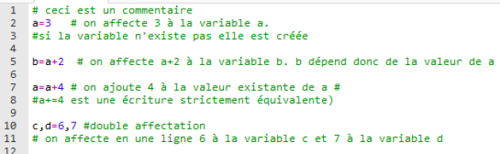

Introduction à l'algorithmie⚓︎
Recette des crèpes⚓︎
- poser 500g de farine en tas
- creuser un trou au somment
- casser 3 œufs dans le trou
- malaxer à la main
- dans un saladier, ajouter un demi litre de lait
- mélanger au fouet
- cuire les crêpes à feu doux
Ceci est une liste d'étapes à réaliser dans l'ordre et en respectant les quantités afin de réussir sa recette. Les consignes sont précises et si une seule étape n'est pas réalisée comme demandé, le résultat ne sera pas celui attendu.
Les labyrinthes
Pour sortir d'un labyrinthe à coup sur, poser la main droite sur le mur et longer le mur sans jamais décoller la main. Lorsqu'il n'y a plus de mur, vous êtes sorti.
Cet méthode permet-elle de sortir des labyrinthes proposés ?

Définition : L'algorithme
Un algorithme est une suite d'instruction précises et sans ambiguïté permettant de résoudre un problème à partir de certaines données.
Algorithmes de la vie quotidienne⚓︎
Ma journée
Mettre dans l'ordre les étapes à suivre pour aller au travail.
Créer un algorithme de calcul
mettre dans l'ordre les étiquettes d'étapes de l'algorithme
Que fait cet algorithme?
Que fait cet algorithme?
Il calcule l'aire dans disque de rayon R.
Conventions⚓︎
Lorsqu'on écrit un algorithme, on prendra soin de commencer par le nommer, de lister les variables qu'il utilise puis de mettre les instructions encadrées par les mots DEBUT et FIN :
1 2 3 4 5 6 7 | |
Variables et affectation⚓︎
Une variable correspond à un emplacement en mémoire de l'ordinateur.
On peut la représenter par une boite qui aurait un nom et qui contiendrait une valeur.

affectation
Pour affecter une valeur à une variable on utilise cette notation :
a←3
Mais on peut aussi utiliser d'autres variables pour affecter une valeur à une autre :
début :
b←a*2
c←b+a
fin
Exécuter un algorithme

A la fin de l'exécution de :
les instructions d'entrée et de sortie⚓︎
Les entrées⚓︎
On peut avoir besoin de récupérer un valeur entrée au clavier par l'utilisateur.
On utilise alors la syntaxe
1 | |
1 2 3 4 5 6 | |
Créer un algorithme⚓︎
remplir les champs avec les variables
Compléter l’algorithme ci-dessous pour qu'il calcule la moyenne de 4 nombres entrés par l'utilisateur.
Algo moyenne :
variables , nb1, nb2, nb3, nb4, s, m sont des nombres
DEBUT :
Les sorties⚓︎
Le dernier algorithme calcule l'aire d'un disque dont le rayon est entré par l'utilisateur mais ne le renseigne pas sur le résultat.
Il faut ensuite afficher le résultat du calcul avec :
AFFICHER A
Ce qui donne :
Algo Aire_Disque :
Variable R nombre
DEBUT :
LIRE R
A←R*R*3.14
AFFICHER A
FIN
Passer de l'algorithme au langage Python⚓︎
Toutes les instructions qui ont été vue peuvent être traduites en langage de programmation : python ou autre.
Affections de variables⚓︎
En python, les variables sont créées au moment où on leur affecte une valeur. Il n'est pas utile de les déclarer préalablement comme dans la plupart des langages.

Entrées et sorties⚓︎
Pour demander à l'utilisateur de rentrer une valeur, on utilise la commande input().
Lorsque l'on écrit cette commande, le programme attend que l'utilisateur écrive quelque chose avant de poursuivre.
En ajoutant du texte entre guillemets dans la parenthèse, on peut écrire un message destiné à l'utilisateur.
Pour faire afficher les données au langage python, on utilise la commande print().
Soit on afficher un message et on doit mettre des guillemets, soit on affiche le contenu d'une variable et on en met pas.
On peut affecter à une variable, les informations entrées par l'utilisateur. Tester et comprendre le code ci-dessous :